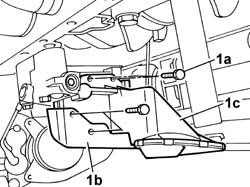
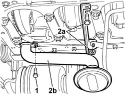
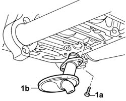

1084B28 ENGINE OIL INTAKE PUMP - R + R WITH CRANKCASE SUMP REMOVED
- Path
- Procedures > 10 ENGINE UNIT > 1084 ENGINE LUBRICATION SYSTEM > 1084B ENGINE OIL LUBRICATION CIRCUIT > 1084B28 ENGINE OIL INTAKE PUMP - R + R WITH CRANKCASE SUMP REMOVED
- Kind
- repair procedure (removal / refitting; the operation number is the code)
- Applies to
- all engines; all production periods
- Interactive page
- https://sloeber94.github.io/elrnDB-fDct/en/#/244000928
Applies to: engines: 2.0 16V; all production periods
 Removing
Removing
 Refitting
Refitting- Position a suitable container for collecing the fluid inside the engine oil intake.
1. Undo the bolts fixing the engine oil intake (1a), remove the casing (1b) and the engine oil intake (1c).

Applies to: engines: 2.0 16V; all production periods
Refitting
Removing- Fit the engine oil intake.
- Fit the casing.
- Tighten the bolts fixing the intake.
Applies to: engines: 2.3 JTD 16V; all production periods
Removing
Refitting1. Unscrew the bolts securing the intake to the sump.
2. Undo retaining nut (2a) and remove engine oil intake (2b).

Applies to: engines: 2.3 JTD 16V; all production periods
Refitting
Removing- Fit the engine oil intake.
- Tighten the nut and bolts securing the intake to the crankcase and the oil return pipe to the sump.
 | Value - daNm | Fastening | Component | Ø |
|---|---|---|---|---|
. | 1 | Bolt | OIL SECTION PUMP | M6 |
Applies to: engines: 2.8 JTD 8V; all production periods
Removing
Refitting1. Undo the fixing bolts (1a) and remove the engine oil intake duct (1b).

Applies to: engines: 2.8 JTD 8V; all production periods
Refitting
Removing- Fit the engine oil intake duct and tighten the fixing bolts.
Applies to: engines: 2.0 JTD 8V; all production periods
See in Op. 1084B10